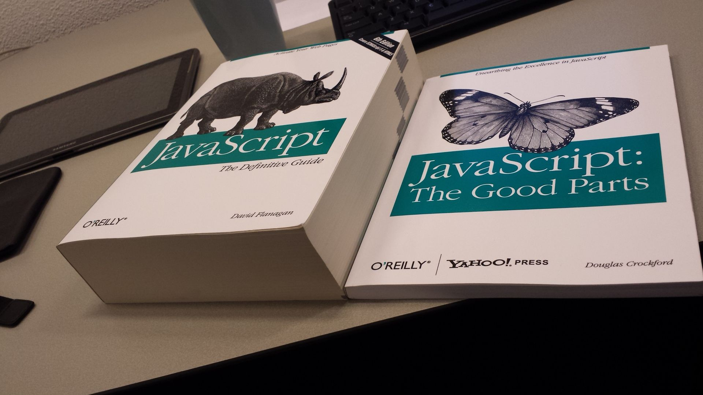

Wykład 3:
Wstęp JavaScript
Plan wykładu cz. 2
- Wstęp do JavaScript
- Cechy języka
- Zmienne i wyrażenia
- Funkcje
- Zasięg zmiennych
- Instrukcje kontrolne
- Obiekty
- Tablice
- jQuery
Historia JavaScript
JavaScript to język programowania zaprojektowany przez firmę Netscape Communications dla przeglądarki internetowej.
Twórcą języka jest Brendan Eich: "To defend the idea of JavaScript against competing proposals, the company needed a prototype. Eich wrote one in 10 days, in May 1995."
JavaScript: The Good Parts, Douglas Crockford

JavaScript łączy w sobie trzy koncepcje:
- funkcyjność wzorowaną na języku Scheme,
- obiektowość wzorowana na języku Smalltalk,
- składnię wzorowaną na języku Java.
Język JavaScript nie jest wariantem języka Java!!!
Cechy języka
- Przenośność - identyczne działanie niezależnie od platformy sprzętowej.
- Dynamiczna typizacja - typ nie jest ściśle przypisany do konkretnej zmiennej lub wyrażenia.
- Jednowątkowość
Dlaczego JavaScript jest ważny?
- dostępny wszędzie
- każdy użytkownik z reguły posiada przeglądarkę
- automatyczna aktualizacja
Najprostszy "przypadek użycia"
Osadzenie w stronie HTML
<html>
<body>
<script>
console.log('Hello world');
</script>
</body>
</html>
Użycie osobnego pliku źródłowego
index.html
<html>
<body>
<script src="script.js"/>
</body>
</html>
script.js
console.log('Hello world');
Zmienne
Zmienne deklarujemy przy użyciu słowa kluczowego var:
var a = 10, b; // a -> 10, b -> undefined
var c = null; // c -> null
lub let:
let a = 10, b; // a -> 10, b -> undefined
let c = null; // c -> null
- Niezainicjowania zmienna przyjmuje wartość
undefined. - Słowo kluczowe
var|letjest opcjonalne, zaleca się jednak je stosować.
Typy danych
- JavaScript jest językiem dynamicznie typizowanym - typ zmiennej lub wyrażenia nie jest znany podczas kompilacji.
- Podczas wykonywania kodu typ wartości przechowywanej w zmiennej lub będącej wynikiem wyrażenia jest dobrze określony.
var a;
a = 2 + 2;
console.log(typeof(a)); // -> number
a = 'foo';
console.log(typeof(a)); // -> string
Typy danych
| typ | przykłady |
|---|---|
number |
0, 1, 0.5, 2E-10 |
boolean |
true, false |
string |
'', 'foo' |
function |
function(a) { return a + 1; } |
array |
[], ['apple', 'orange'] |
object |
{}, {id: 5, value: 'foo'} |
Funkcje
Funkcja jest wartością utworzoną przy użyciu literału funkcyjnego:
function add(left, right) {
return left + right;
};
add(2, 2); // -> 4
function add() {
var sum = 0;
for (i = 0; i < arguments.length; ++i) {
sum += arguments[i];
};
return sum;
};
add(1, 2, 3, 4); // -> 10
a co jeśli...
function add(left, right) {
return
left + right;
};
add(2, 2); // ?
function add(left, right) {
left + right;
};
add(2, 2); // ?
funkcja to też typ danych...
function map(array, fn) {
var result = [];
for(i = 0; i < array.length; ++i) {
result[i] = fn ? fn(array[i]) : array[i];
}
return result;
};
const array = [1,2,3,4,5];
const res1 = map(array);
const incrementFn = function(a) { return a + 1; };
map(array, incrementFn);
map(array, function(a) { return a * 2; });
map(array, incrementFn()); // ?
wartością funkcji może być funkcja
function createMultiplier(amount) {
return function(a) { return a * amount; };
};
createMultiplier(5)(2); // -> 10
function map(array, fn) {
var result = [];
for(i = 0; i < array.length; ++i) {
result[i] = fn ? fn(array[i]) : array[i];
}
return result;
};
Na szczęście funkcja map jest standardowo zdefiniowana dla typu tablicowego:
[1,2,3,4,5].map(createMultiplier(2));
// -> [2,4,5,8,10];
W języku JavaScript funkcję można zadeklarować (stworzyć) na kilka sposobów...
var add = function(left, right) {
return left + right;
};
function sub(left, right) {
return left - right;
};
const mul = (left, right) => left * right;
// w konsekwencji...
add(2, 2); // -> 4
function add(left, right) {
return 0;
}
add(2, 2); // -> 0
add = null;
add(2, 2); // -> Uncaught TypeError: add is not a function
Operatory w JavaScript
- , [], ()
- Arytmetyczne: +, -, *, /, %, ++, --, ** (ES7)
- Konkatenacja łańcuchów znaków: +, +=
- Bitowe: &, |, ^, ~, <<, >>, >>>
- Przypisania: =, +=, -=, …, <<=, …, &=, …
- Porównania: ==, !=, ===, !==, >, >=, <, <=
- Logiczne: &&, ||, ! (skrócone wartościowanie && i ||)
- new, delete, typeof, void, in, instanceof
- Operator przecinka: ,
- Operator warunkowy (ternarny): ?:
- Destrukturyzacja tablicy/obiektu (ES6)
- Operatory rest i spread: … (ES6)
Zmienne globalne
Użycie zmiennej wewnątrz ciała funkcji bez wcześniejszej deklaracji z użyciem słowa var spowoduje użycie lub stworzenie zmiennej globalnej.
Jest to fatalny błąd projektowy, który popełnili twórcy języka JavaScript!
var a = 10;
var f = function() {
console.log(a); // -> 10 !
a = 99;
};
f();
console.log(a); // -> 99 !!!
var f = function() {
a = 99;
};
f();
console.log(a); // -> 99 !!!
Zmienne globalne
Szczególnie groźne jest błędne użycie zmiennej indeksującej w pętli for:
function processRow(row) {
for (i = 0; i < row.length; ++i) {
console.log(row[i]);
}
}
function processMatrix(matrix) {
for (i = 0; i < matrix.length; ++i) {
processRow(matrix[i]);
}
};
processMatrix([[1,2,3], [4,5,6], [7,8,9]]);
-> 1 2 3
Zmienne globalne
function processRow(row) {
for (var i = 0; i < row.length; ++i) {
console.log(row[i]);
}
}
function processMatrix(matrix) {
for (var i = 0; i < matrix.length; ++i) {
processRow(matrix[i]);
}
};
processMatrix([[1,2,3], [4,5,6], [7,8,9]]);
-> 1 2 3 4 5 6 7 8 9
Zmienne lokalne
Wewnątrz funkcji zawsze deklarujemy zmienne z użyciem słowa var (let, const), gdyż wtedy stają się one zmiennymi lokalnymi.
Hoisting
Zasięg zmiennych w JavaScripcie jest funkcyjny a nie blokowy, chociaż blokowa składnia sugeruje coś innego.
function f1() {
console.log(a); // -> Uncaught ReferenceError: a is not defined
};
function f2() {
console.log(a); // -> undefined
var a = 10;
console.log(a); // -> 10
};
function f3() {
console.log(a); // -> undefined
{ // <- to nie ma znaczenia dla widzialności
var a = 10;
console.log(a); // -> 10
}
};
Domknięcia
const nextValue = function () {
let cntr = 0;
return function() {
++cntr;
return cntr;
};
}();
console.log(nextValue()); // -> 1
console.log(nextValue()); // -> 2
- Funkcja ma dostęp do parametrów i zmiennych widocznych w miejscu, w którym owa funkcja została zadeklarowana.*
- Owe parametry i zmienne są dostępne nawet wówczas, gdy funkcja wewnętrzna ma dłuższy czas życia niż funkcja zewnętrzna.
- Mechanizm ten nazywamy domknięciem (ang. closure).
* Wyjątkiem są zmienne this oraz arguments.
Instrukcje kontrolne
Instrukcja warunkowa
if(a === 3) {
...
} else {
...
}
- Składnia jest identyczna jak w języku C lub Javie.
- Wyrażenie nie musi być typu boolean.
- Dla każdego wyrażenia w instrukcji if JavaScript określa czy jest ono truthy czy też falsy.
- Do porównywania tożsamościowego stosujemy wyłącznie operatory
===oraz!==.
Wartości falsy i truthy
Następujące wartości są falsy:
falsenullundefined- Pusty napis:
'' - Liczba
0 - Liczba
NaN
Pozostałe wartości są truthy wliczając w to true, napis 'false'
oraz dowolną wartość obiektową.
Instrukcje pętli
while (expression) {
...
};
do {
...
} while (expression);
for (let i = 0; i < size; ++i) {
...
};
- Wyrażenie
expressionpodobnie jak w przypadku instrukcji warunkowej obliczane jest do wartości falsy i truly. - Koniecznie należy pamiętać o deklarowaniu zmiennej indeksującej w pętli for.
Obiekty
JavaScript oferuje bardzo wygodną formę deklarowania obiektów przy użyciu tzw literału obiektowego:
const person = {
name: 'John',
surname: 'Doe',
age: 30
};
person.name; // -> 'John'
person['age']; // -> 30
person.email; // -> undefined
person.email || '' // -> ''
person.address.street // -> TypeError
person.address && person.address.street // -> undefined
Obiekty są strukturami dynamicznymi, można dodawać i usuwać właściwości "w locie":
const item = {}; // obiekt "pusty"
item.name = 'ATmega1284';
item.price = 199.90;
console.log(item); // {name: "ATmega1284", price: 199.9}
delete item.name;
console.log(item); // {price: 199.9}
Możliwe jest wyliczenie wszystkich właściwości obiektu przy użyciu specjalnej składni for
in.
const obj = {
name: 'John',
age: 30,
sayHello: function() { console.log('Hello ' + this.name); }
};
for(let property in obj) {
console.log(property + ':' + typeof obj[property]);
};
Metody
Obiekty mogą posiadać właściwości typu funkcyjnego. Tak zdefiniowane funkcje nazywamy metodami.
const account = {
balance: 0,
debit: function(amount) {
if (amount < 0) {
throw new Error('Illegal amount');
}
if (this.balance < amount) {
throw new Error('Insufficient account balance');
}
this.balance -= amount;
return this.balance;
},
credit: function(amount) {
if (amount < 0) {
throw new Error('Illegal amount');
}
this.balance += amount;
return this.balance;
}
};
Zagadka
const account = {
balance: 199,
printBalance: function() {
console.log(this.balance);
}
};
-> 199
const account = {
balance: 199,
printBalance: function() {
function inner() {
console.log(this.balance);
};
inner();
}
};
-> undefined 
Bezklasowość
JavaScript do wersji ES5 włącznie był językiem obiektowym, w którym nie istniało pojęcie klasy ani konstruktora.
Ponieważ istnieje tylko jeden typ obiektowy (wszystkie obiekty są tego samego typu), pojęcie klasy nie ma sensu.
Klasy są jednak także użyteczne jako wzorce do tworzenia obiektów, JavaScript oferuje inne mechanizmy wzorców.
Tworzenie obiektów
Sposób 1: literał obiektowy
var employee = {
name: 'John',
surname: 'Doe',
age: 30,
sayHello: function() {
console.log('Hello ' + this.name + ' ' + this.surname);
}
};
employee.sayHello();
Sposób 2: funkcja fabrykująca
function makeEmployee(name, surname, age) {
return {
name: name,
surname: surname,
age: age,
sayHello: function() {
console.log(`Hello ${this.name} ${this.surname}`);
}
};
};
makeEmployee('John', 'Doe', 30).sayHello();
...lub bardziej elegancko przy użyciu obiektu specyfikującego
function makeEmployee(spec) {
return {
name: spec.name,
surname: spec.surname,
age: spec.age,
sayHello: function() {
console.log(`Hello ${this.name} ${this.surname}`);
}
};
};
makeEmployee({name: 'John', surname: 'Doe', age: 30}).sayHello();
Sposób 3: dziedziczenie prototypiczne
const employee = {
name: '',
surname: '',
sayHello: function() {
console.log(`Hello ${this.name} ${this.surname}`);
}
};
const john = Object.create(employee);
john.name = 'John';
john.surname = 'Doe';
john.sayHello(); // -> Hello John Doe
Każda zmiana w prototypie jest natychmiast widoczna w obiektach dziedziczących.
employee.sayHello = function() {
console.log('Hello ' + this.name);
};
john.sayHello(); // -> Hello John
Sposób 4: funkcja fabrykująca i pola prywatne
W obiektach JavaScriptowych nie ma pól (a więc i metod) prywatnych, ale można ukryć pola stosując technikę domknięć (closure).
function makeEmployee(spec) {
const name = spec.name;
const surname = spec.surname;
return {
sayHello: function() {
console.log(`Hello ${name} ${surname}`);
}
};
};
var john = makeEmployee({name: 'John', surname: 'Doe'});
john.sayHello(); // -> Hello John Doe
john.name; // undefined
john.surname; // undefined
Tablice
Tablice w języku JavaScript są obiektami o pewnej specjalnej charakterystyce:
const t = [];
t[0] = 123; // --> [123]
t[5] = 3; // --> [123, 4 empty slots, 5]
t[6] = 'foo'; // --> [123, 4 empty slots, 5, 'foo bar']
t.foo = 'bar'; // --> [123, 4 empty slots, 5, 'foo bar']
console.log(t.foo); // --> bar
const fibb = [1,2,3,5,8,13];
const bag = [1,5,'foo',{}, {name: 'Doe'}, [1,2,3]];
Iterowanie klasyczne:
const fibb = [1,2,3,5,8,13];
for(var i = 0; i < fibb.length; ++i) {
console.log(`${i}: ${fibb[i]}`);
};
Iterowanie funkcyjne:
const fibb = [1,2,3,5,8,13];
fibb.forEach(function(val, i) {
console.log(`${i}: ${val}`);
});
DOM - Document Object Model
- Opis reprezentacji dokumentu HTML lub XML w postaci drzewa elementów
- Interfejs do manipulowania elementami dokumentu
- Zdarzenia:
- generowane przez mysz
- generowane przez klawiaturę
- związane z ramkami i obiektami
- związane z formularzami
JavaScript - obiekt document
- Reprezentuje dokument wyświetlony w przeglądarce
- Zawiera wszystkie elementy składowe dokumentu
- Umożliwia manipulację cechami elementów: zachowanie, wygląd
- Dostęp do elemenotów
- przez formularz: document.dataForm.nazwisko
- przez nazwę: document.getElementsById("nazwisko)
- Operacje na dokumentcie: open(), clear(), write(). close()
Biblioteka jQuery
Dołączanie pliku jQuery z serwera CDN
<script src="http://ajax.aspnetcdn.com/ajax/jQuery/jquery-1.6.3.min.js"></script>
<script src="http://code.jquery.com/jquery-1.6.3.min.js"></script>
<script src="http://ajax.googleapis.com/ajax/libs/jquery/1.6.3/jquery.min.
js"></script>
<script >
$(document).ready(function() {
// to jest miejsce na nasz kod
});
</script>
Pobieranie elementów stron
$('selektor')
$('#banner')
$('.banner')
$('#navBar a')
$('#banner').html('Byłem tu, JavaScript
');
Filtry
$('tr:even')
$('p:first')
$('p:last')
$('li:has(a)')
$('div:hidden').show()
Dodawanie treści do stron
.html()
.text()
.append()
.prepend()
.before()
.after()
Zastępowanie i usuwanie wybranych elementów
.remove()
.replace()
Ustawianie i odczyt atrybutów znaczników
.addClass()
.removeClass()
.toggleClass()
Odczyt i modyfikacja właściwości CSS
.css()
var bgColor = $('#main').css('background-color');
$('body').css('font-size', '200%');
$('#highlightedDiv').css({
'background-color' : '#FF0000',
'border' : '2px solid #FE0037'
});
Wykonanie akcji na każdym elemencie kolekcji
Funkcje anonimowe
function() {
// tu jest umieszczany kod funkcji
}
each()
$('selektor').each(function(){
// tu jest umieszczony kod funkcji
});
$(this)
var i=1;
$('p').each(function(){
var tekst = $(this).text();
tekst=tekst+i;
i++;
$(this).text(tekst)
});
Mysz
.click()
$("p").click(function(){
$(this).hide();
});
Mysz
$("p").dblclick(function(){
$(this).hide();
});
Mysz
$("#p1").mouseenter(function(){
alert("You entered p1!");
});
Mysz
$("#p1").hover(function(){
alert("You entered p1!");
},
function(){
alert("Bye! You now leave p1!");
});
Mysz
$("p").on({
mouseenter: function(){
$(this).css("background-color", "lightgray");
},
mouseleave: function(){
$(this).css("background-color", "lightblue");
},
click: function(){
$(this).css("background-color", "yellow");
}
});
Animacje i efekty
.hide()
.show()
.toggle()
.fadeOut()
.fadeIn()
.fadeToggle()
.slideDown()
.slideUp()
.slideToggle()
Źródła
- Politechnika Wrocławska - Projekt i implementacja systemów webowych
- dr Piotr Rzonsowski - Uniwersytet im. Adama Mickiewicza w Poznaniu
- https://www.w3schools.com/jquery/
- https://www.w3schools.com/js/DEFAULT.asp
- https://www.tutorialspoint.com/javascript/index.htm
- https://developer.mozilla.org/pl/docs/Learn/Getting_started_with_the_web/JavaScript_basics